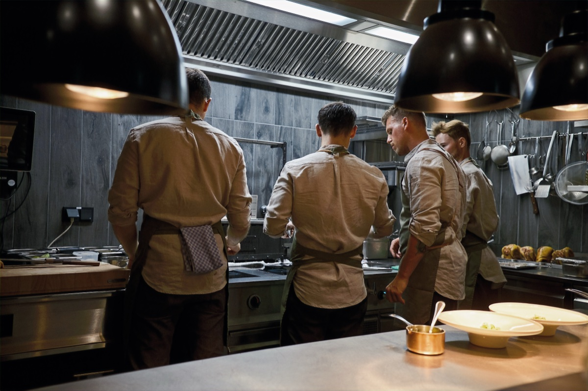
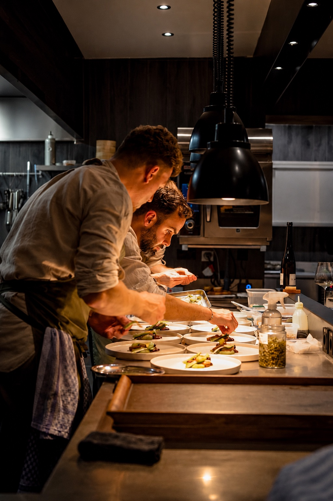
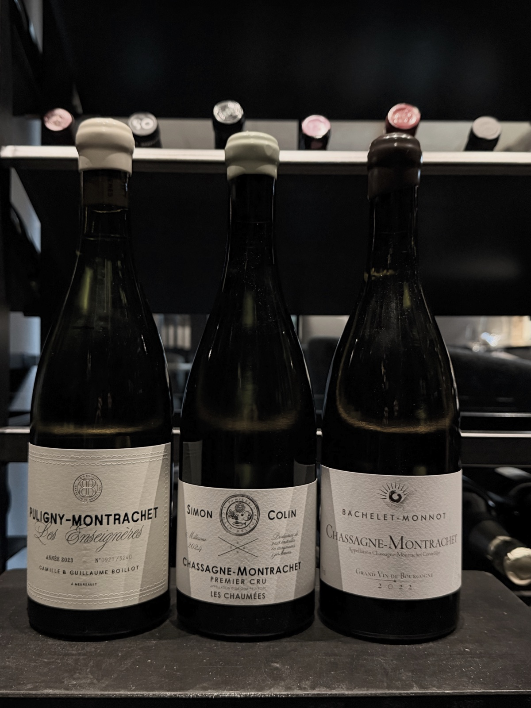

Vegetarian or pescatarian
A vegetarian or pescatarian menu is possible. Please let us know when you book.
The menu

An evening at Das Schrei
You choose between four, five, six or seven courses. What exactly is served remains a surprise and changes with the seasons.
Our cooking
We don’t cook what’s expected right now – we cook what makes sense to us.
Some dishes stay longer, others change after just a few days. The point isn’t to show as much as possible, but for every course to work on its own while the evening still follows a common thread.
We don’t publish the menu in advance. That leaves room for creativity and new ideas – always guided by the season and what’s available.

Chef’s table
The chef’s table is more than a seat. It takes you to where the menu is created. You sit directly at the open kitchen, watch every move and experience the evening closer than anyone else.
Here we serve only the 7-course menu – because we want this experience to be enjoyed in its full depth.
The menu
A cover charge of € 7 applies. It includes house-baked sourdough bread, amuse-bouche, petits fours and unlimited mineralised Salzburg water.
In the dining room, you decide how extensive your evening should be. All options follow the same menu – in a shorter or longer form depending on the number of courses.
Let us know in advance
A vegetarian or pescatarian menu is possible. Please let us know when you book.
We are happy to accommodate allergies and intolerances wherever possible. Please tell us about them in full before your visit so we can prepare as well as possible.
Because of how we prepare and build the menu, we cannot reliably accommodate last-minute changes.

In the evening · Pairings
With every menu, you can choose a wine pairing, a mixed pairing or a fully non-alcoholic pairing.
Our combinations are created together with the menu. We develop and make the non-alcoholic drinks ourselves – with ferments, teas, juices and seasonal ingredients.
Our wine list offers a carefully curated selection of bottles – from great classics to exciting discoveries, always focused on origin, character and craft.
Good to know
Yes. We don’t publish the individual dishes in advance. You only choose the number of courses.
Since we work with seasonal produce, our menu changes continuously.
No. Das Schrei is a tasting-menu restaurant. With a booking in the dining room, however, you can choose between four, five, six or seven courses.
No. With a booking in the dining room, you can choose between 4 and 7 courses on the evening. At the chef’s table, we always serve our 7-course menu.
To fully enjoy the experience, allow about two and a half to three and a half hours, depending on the number of courses.
Yes. A vegetarian menu is available only if you request it when booking.
Unfortunately, because of our style of cooking and the produce we use, we cannot offer a fully vegan menu.
Wherever possible, yes. Please list all allergies and intolerances in full when you book, so we can prepare as well as possible and give you the best experience.
If you only tell us at the restaurant, we cannot guarantee a safe alternative at such short notice.
Yes. On Fridays from 12 to 2 pm, we serve our usual menu in four or five courses.
At the chef’s table, we serve only the full 7-course menu.
Yes. There are 14 marked parking spaces for our guests around the building.
You can also park free of charge in all the surrounding side streets.
Of course. An evening at Das Schrei should feel relaxed for everyone at the table and in the room.
We therefore kindly ask that the volume stays pleasant – that way, it’s a lovely evening for all our guests.
Where possible, yes. It depends on seating and how busy we are that day.
Please mention your dog when you book, so we can plan a suitable spot.
Reservations